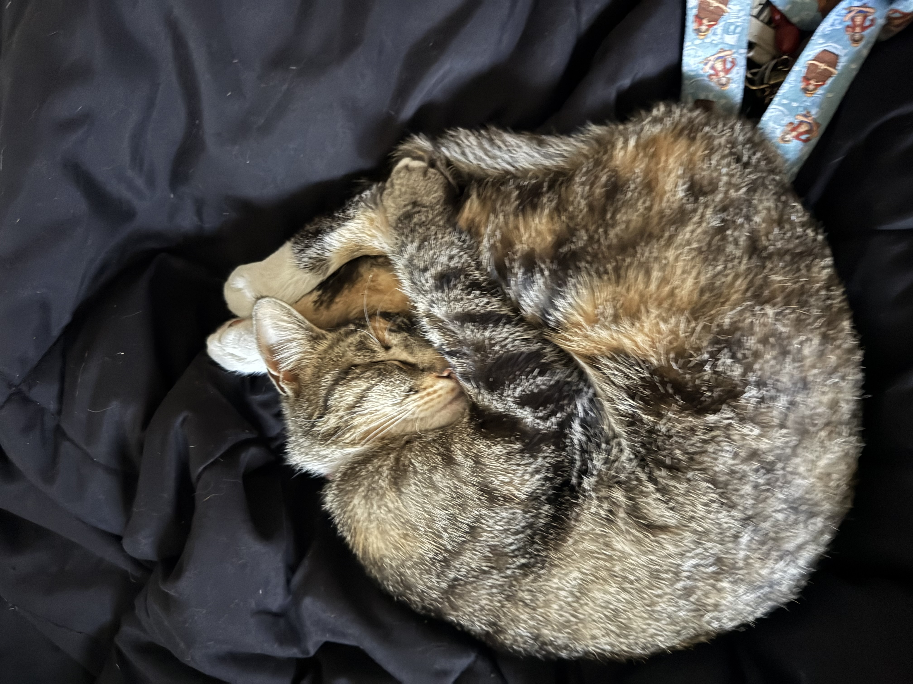

Use this as a fast travel for each page. However it does have a 90 year cool down. Best to scoll to the bottom.
These are some of my favorite websites. They can be helpful or just to help kill time in the day.
